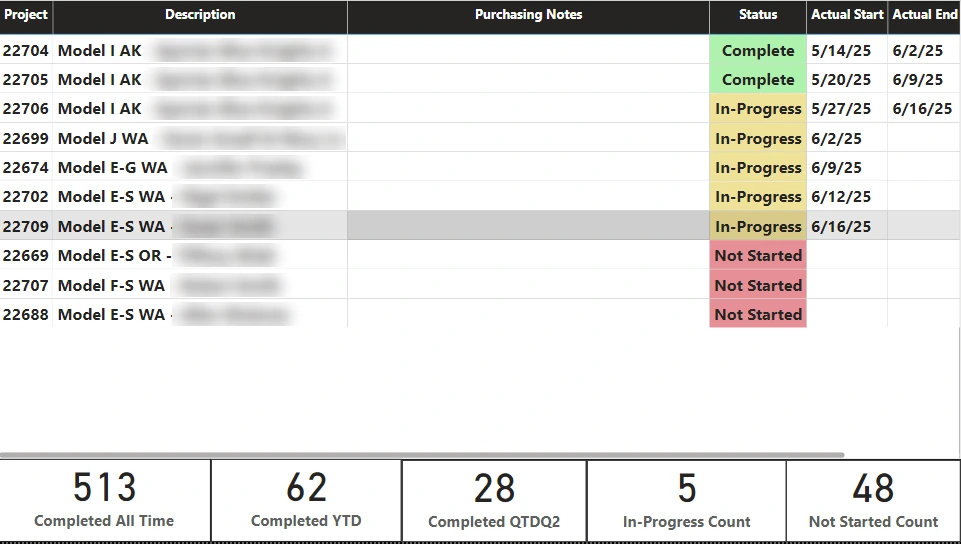

Power BI · ERP and SharePoint data · Conditional formatting · Wolf Industries
Approach highlighted
One view of the production queue from two sources. Job status comes from the ERP, actual start and end dates come from a SharePoint list the production team maintains, and the report joins them so nobody has to check both.
Project Summary
The report gives production and office staff one view of the production queue: which jobs are finished, which are on the floor and which haven't started, along with purchasing notes that can affect the schedule.

How It Works
Skills Demonstrated
Power BI Desktop, combining ERP and SharePoint data in one model, relationships, conditional formatting, KPI cards, and report design for a production audience.
More Power BI reports